IDAS / DOMESTIC EDA
IDAS 参会：
国产 EDA 工具应用进展
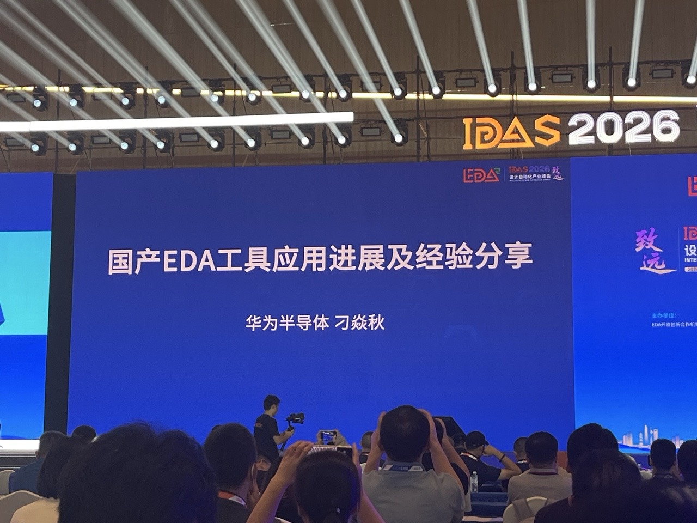
根据设计自动化产业峰会现场分享整理。本文仅转述华为半导体“国产 EDA 工具应用进展及经验分享”的内容与展示数据，不附加个人判断。
一、应用背景：阻力在变化，动力也在变化
分享从国产 EDA 的应用环境展开：一边是工具竞争力与算力能力的变化，另一边是工艺分叉、设计路径分叉以及产品差异化需求带来的新要求。演讲将逻辑折叠芯片作为一种新的设计形态提出。
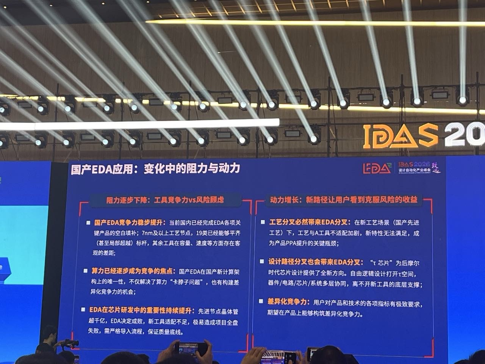
二、逻辑折叠项目：先识别跨层挑战，再建设工具能力
现场用“折叠纸张”的方式说明逻辑折叠的基本设想：将原本相距较远的逻辑单元在空间上拉近，以缩短全局互连，并围绕密度、性能、功耗与供电电压进行协同优化。分享中给出了项目阶段性目标，但这些目标应理解为演讲人的项目规划，而非已实现结果。
围绕这一设计形态，分享将挑战分布在器件、电路、芯片和系统多个层级：三维结构下的容量与建模、RC 与耦合效应、跨 Die 的供电和信号完整性、热—机械—电协同、芯片—封装—系统协同，以及设计规模与效率。
现场展示的 τ EDA V0.1 已用于首款逻辑折叠芯片项目，涉及模拟与数字 EM/IR、物理验证、片上电磁、封装电磁等能力。演讲中列举的工具包括 Patron、GloryBolt、Argus-3D、eWave-3D、Metis-3D，以及 ALPS、Liberal、UVS、UVD、Nanospice、DILIGENT 等。
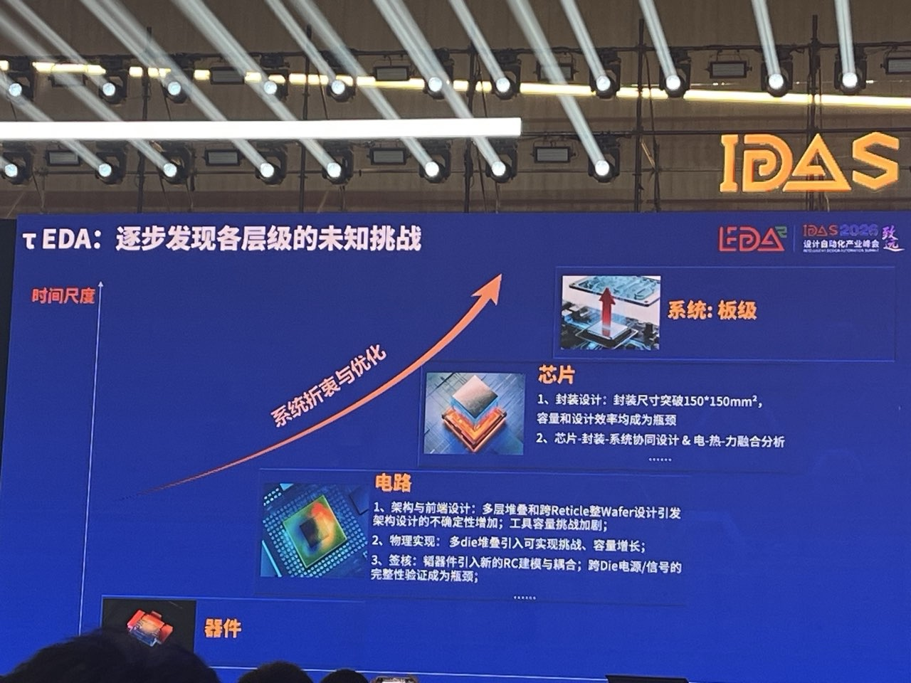
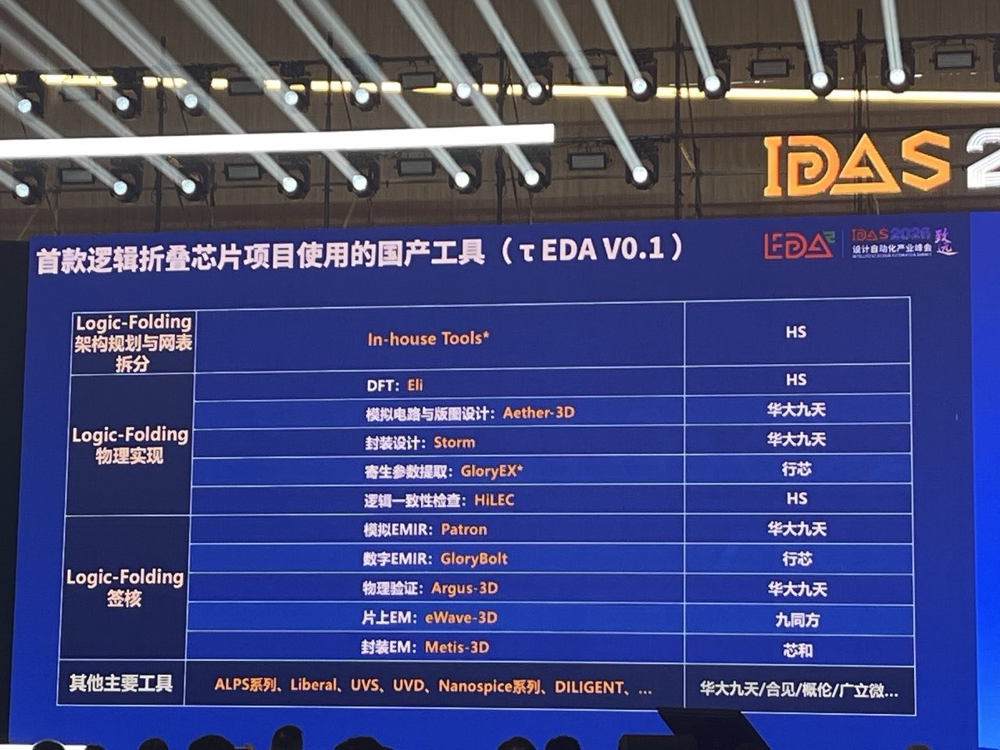
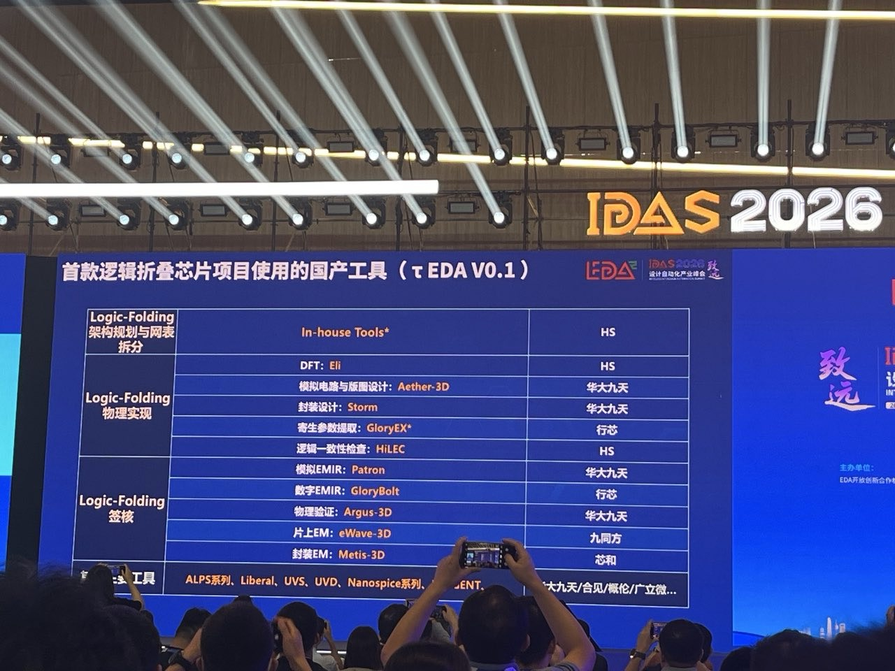
三、规模应用：从导入工具，延伸到质量与发布流程
分享同时介绍了国产 EDA 的规模应用。现场展示的数据为：2025 年已有 17 类国产 EDA 工具进入规模应用，2026 年为 26 类；图例按工具类别或场景标示使用比例，分别为低于 20%、20%—50% 和高于 50%。这一图例不等同于整体 EDA 国产化率。
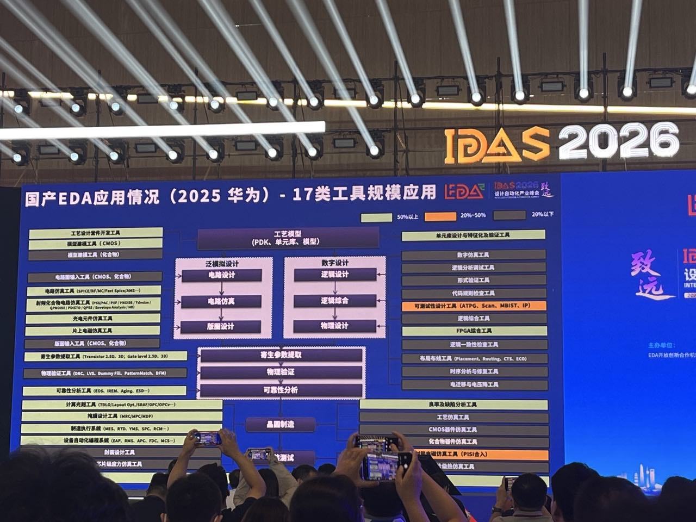
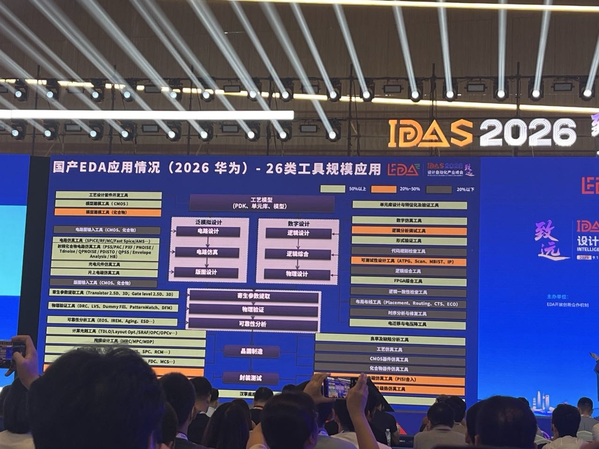
为使工具导入和版本使用可控，分享提出“三层防护网”：海思工具团队自建、覆盖基础协议的用例超过 18 万；海思芯片工程师“考训打榜”形成的测试用例超过 3 万；海思真实项目 benchmark 超过 10 万。三层分别指向基础正确性、初步泛化和复杂工程泛化。
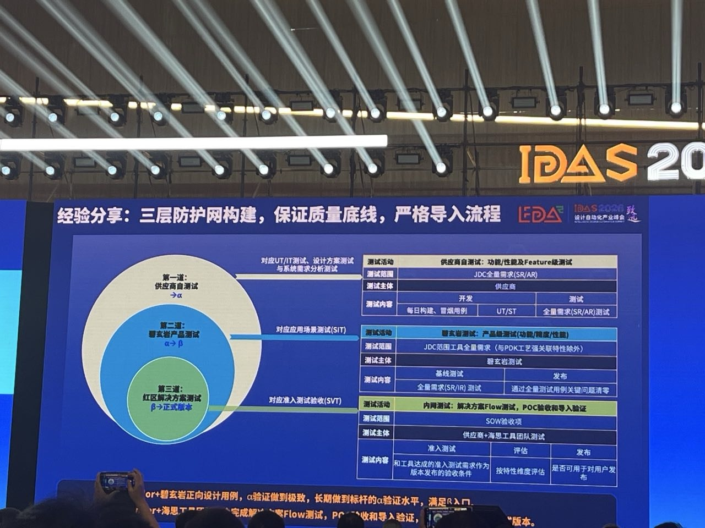
现场展示的 Nile PV 平台覆盖版本准入、测试集管理、覆盖率度量、用例管理、执行管理、结果与看板、导入验收等环节；其下与红区、DTS 系统、供应商版本发布、开发和问题单系统相连。分享披露：自 2025 年 9 月至演讲时，供应商发版超过 5,000 次，月度发布版本超过 400 个，单版本 2—3 天闭环；供应商同步问题单超过 13,000 项。以上均为现场披露数据。
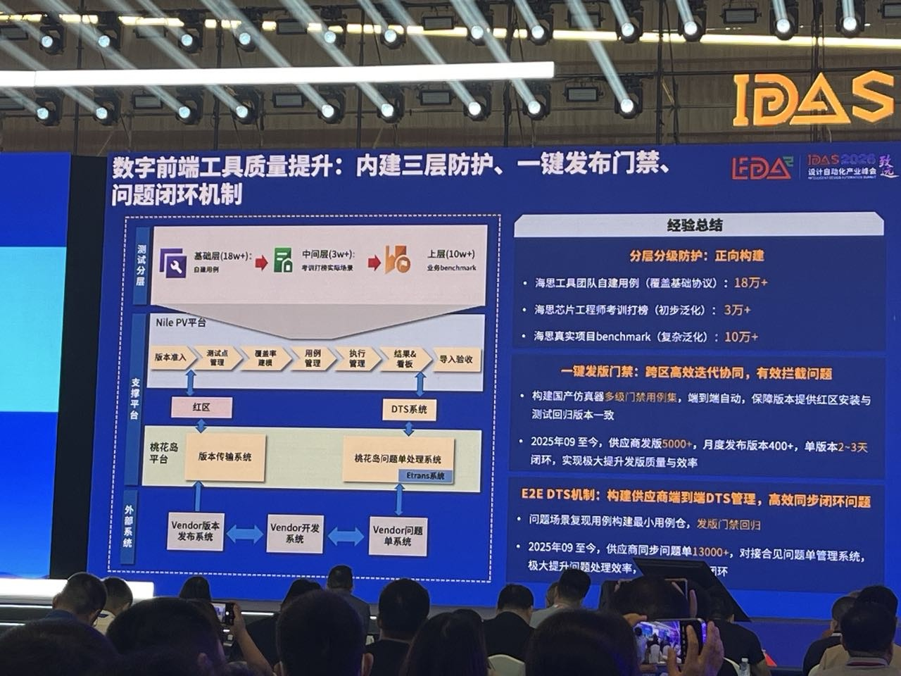
四、数字仿真器：以正向构建与逆向防护推进应用
在数字仿真器案例中，分享将工作概括为“正向构建、逆向防护”。正向侧围绕产品能力、性能与工程适配推进；逆向侧则通过测试、门禁和问题闭环防止版本质量回退。
现场给出的应用数据是：一年内国产仿真器使用人数增长 16 倍，鲲鹏核用量增长近 8 倍。分享还展示了编译时间、仿真时间和内存等指标与标杆的比较，其中页面结论为编译、仿真时间门限可突破，内存性能接近标杆。这些数据用于说明现场项目的应用进展，不应外推为所有设计与版本的通用结论。
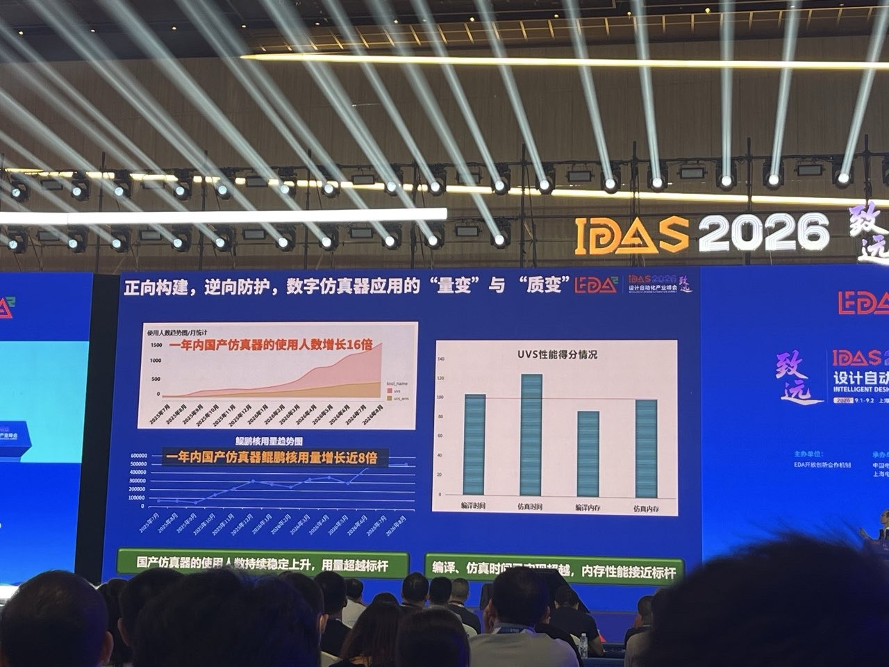
五、分享中的三点结论
- 国产 EDA 正处于从“可用”走向“好用”的关键转折点，批量替换加快；其中海思替换比例超过 50% 的工具，已接受海思项目和用户的严苛应用挑战。
- 在逻辑折叠芯片这一设计形态上，演讲人认为国产 EDA 具备整体协同的先发优势。
- 国产 EDA 的持续发展需要晶圆厂、Fabless、IP 厂商及产业链更多真实项目的支持和使用。
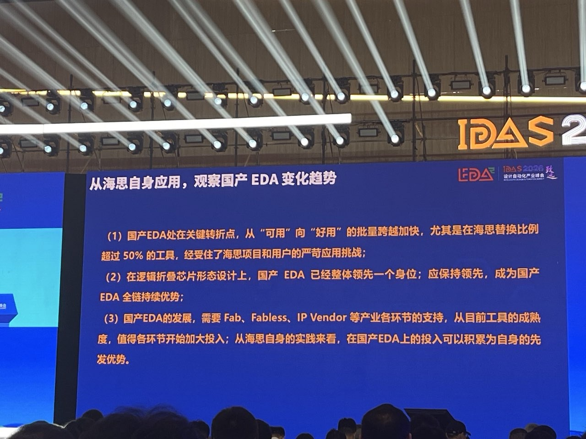
本文按现场分享的两条主线整理：一条是逻辑折叠项目及 τ EDA 的技术路线；另一条是国产 EDA 的规模应用、质量保障与版本协同实践。